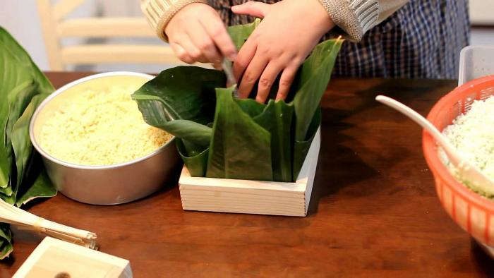
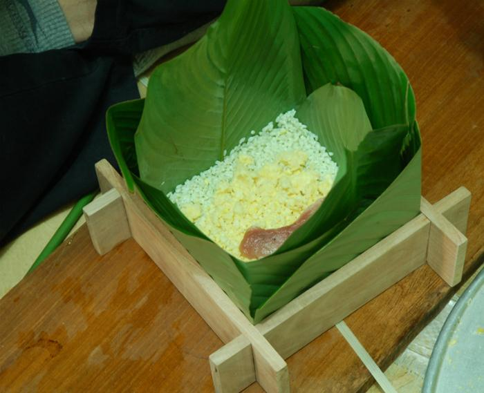
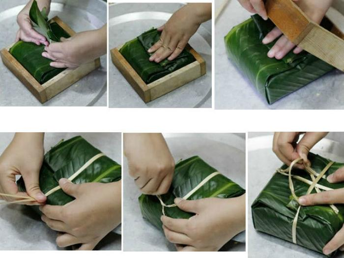
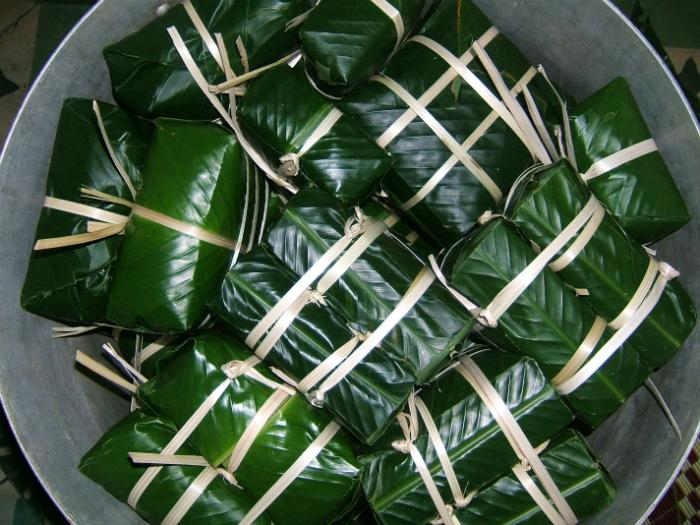

Trước khi làm bánh chưng, bạn sẽ phải tiến hành ngâm nếp trước. Tốt nhất bạn nên ngâm nếp qua đêm, hoặc chí ít cũng phải được 4 tiếng.
Bạn cũng nên ngâm nếp chung với lá riềng hoặc lá dứa để nếp có màu xanh, đồng thời cũng giúp nếp thơm hơn. Đậu xanh không vỏ cũng nên ngâm trong 4 tiếng hoặc để qua đêm.
Sau khi đã ngâm nếp xong, bạn đổ nếp ra rổ và để cho ráo nước. Rắc 1 đến 2 muỗng muối vào và dùng tay trộn đều nếp.
Đậu xanh cũng tiến hành tương tự, bạn đổ đậu ra cho ráo nước rồi trộn với muối và tiêu.
Tiếp đến, bạn ướp thịt với muối, tiêu và đường.
Để bánh vuông và đẹp hơn, bạn nên chuẩn bị cho mình một chiếc khung hình vuông để làm khuôn.
Tiếp theo, bạn xếp 4 lá dong. Xếp lá bằng cách gấp mép dưới lên, gấp mép bên trái qua để tạo đường nếp cho lá. Tiến hành thao tác tương tự cho 3 miếng lá còn lại. Sau đó đặt 4 lá xuống dưới khuôn rồi đổ nếp lên.
Bạn rải đều nếp ở 4 góc khuôn và để lõm ở giữa. Cho đậu xanh vào đó rồi để thịt lên rồi lại đến đậu xanh. Tiếp theo, bạn rải nếp lên phủ lại, cố gắng làm sao để lượng nếp và đậu xanh ở trên và dưới đồng đều nhau.
Cuối cùng, bạn gói bánh và dùng dây buộc lại. Bạn cũng nên nhớ không buộc quá chặt vì trong quá trình nấu trong nồi bánh sẽ còn nở ra nữa.
Bạn nên lót một chút lá dong hoặc thứ gì đó để tránh bánh chạm vào đáy nồi, điều đó tránh bánh cháy khi chúng ta đun.
Sau đó bạn đặt bánh vào trong nồi, đổ ngập nước. Luộc từ 10-12 tiếng với những chiếc bánh vừa. Luộc quá lâu sẽ làm bánh bị nhão, khiến bánh không được dai. Còn luộc bánh chưa đủ thì sẽ khiến bánh bị rời, không rền bánh.
Sau khi bánh đã đủ độ chín, vớt bánh ra thả vào thau nước lạnh rồi rửa sạch bên ngoài bánh, để ráo nước
Lưu ý: khi nước cạn cần thêm nước ấm vào ngập bánh để bánh chín đều.
Chúc các bạn thành công!!!